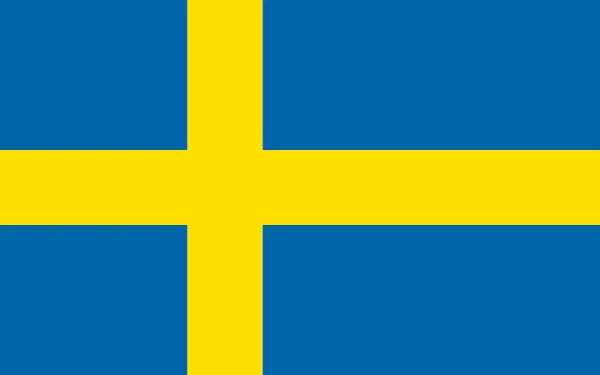

Correntes migratórias são movimentos direcionados e regulares de pessoas de uma região para outra, dentro ou entre países. Elas podem ser de curto ou longo prazo, motivadas por fatores econômicos, sociais, políticos e ambientais. Essas migrações afetam significativamente as áreas de origem e destino, influenciando economia, cultura e política. Estudar correntes migratórias é essencial para compreender os movimentos populacionais globais e locais.
saiba mais"A verdadeira viagem da descoberta consiste não em buscar novas paisagens, mas em ter olhos novos." Marcel Proust
A migração é o ato ou processo de deslocamento de pessoas ou grupos de um local para outro, geralmente envolvendo uma mudança de residência de um lugar para outro, seja dentro de um país ou entre diferentes países. Essa movimentação pode ser temporária ou permanente e pode ser motivada por uma variedade de fatores, como busca por melhores oportunidades econômicas, escape de conflitos, perseguição política, desastres naturais, reunião familiar ou simplesmente a busca por um ambiente mais favorável. A migração é um fenômeno social e demográfico significativo que desempenha um papel importante na história da humanidade e na configuração das populações em todo o mundo.
Difusão Cultural: As migrações têm sido um veículo importante para a disseminação de culturas, línguas, religiões e tradições. Quando as pessoas se deslocam para novas áreas, elas frequentemente compartilham seus costumes e conhecimentos com as comunidades locais, enriquecendo assim a diversidade cultural e promovendo a compreensão intercultural. Diversidade Genética: As migrações humanas ao longo dos milênios contribuíram para a diversidade genética global. O intercâmbio de genes entre populações de diferentes regiões levou ao desenvolvimento de características genéticas únicas em diferentes grupos étnicos, proporcionando adaptabilidade e resistência a doenças. Evolução das Sociedades: Migrações em grande escala muitas vezes têm sido impulsionadas por mudanças nas condições ambientais, conflitos ou oportunidades econômicas. Essas migrações têm o potencial de transformar completamente a estrutura e o funcionamento das sociedades, levando à formação de novas culturas e civilizações. Desenvolvimento Econômico: Migrações internas e internacionais podem contribuir significativamente para o desenvolvimento econômico, uma vez que pessoas que migram frequentemente buscam oportunidades de emprego e uma vida melhor. Essa busca por oportunidades pode estimular o crescimento econômico em áreas de destino e ajudar a reduzir desigualdades regionais. Intercâmbio de Conhecimento: Migrantes frequentemente trazem consigo conhecimentos e habilidades que são valiosos para as comunidades de acolhimento. Isso pode incluir competências técnicas, científicas, artísticas e culturais que enriquecem as sociedades receptoras. Desenvolvimento Cultural: A mistura de culturas devido às migrações pode levar ao surgimento de novas formas de expressão cultural, como música, culinária, moda e artes. Isso enriquece o patrimônio cultural global. Desafios e Soluções Globais: Migrações também podem destacar desafios globais, como a busca de refúgio por pessoas que fogem de conflitos e perseguições. Isso coloca questões importantes relacionadas aos direitos humanos e à responsabilidade internacional de proteger os refugiados. Em resumo, as migrações moldaram profundamente a história da humanidade, influenciando a cultura, a genética, a economia e a sociedade. Elas continuam a ser um fator significativo em nossos tempos modernos, desempenhando um papel importante na dinâmica global, na diversidade cultural e no desenvolvimento econômico.
Busca por Emprego:
A falta de oportunidades de emprego ou a busca por melhores salários e condições de trabalho em outra região ou país é uma das principais causas de migração econômica.
Melhoria do Padrão de Vida: Pessoas podem migrar em busca de um padrão de vida mais alto, que inclui acesso a serviços de saúde e educação de qualidade.
Desigualdade Regional: Disparidades econômicas regionais podem levar à migração de áreas menos desenvolvidas para áreas mais prósperas dentro de um país.
Políticas e Conflitos:
Perseguição e Conflitos Armados: A perseguição política, conflitos armados e violações dos direitos humanos frequentemente forçam as pessoas a fugir de suas casas em busca de segurança.
Mudanças Políticas: Instabilidade política, regimes repressivos e agitação civil podem motivar migrações em massa.
Desastres naturais Eventos como terremotos, inundações, furacões e secas podem forçar as pessoas a abandonar suas casas em busca de segurança.
mudanças climáticas A degradação ambiental e as mudanças climáticas podem afetar a disponibilidade de recursos naturais, incentivando a migração.
Reunião Familiar: O desejo de se reunir com membros da família que já migraram é um motivador importante.
Educação e Casamento: A busca por educação de qualidade, casamento ou parceiro romântico também pode levar à migração.
consequências
impacto Econômico
Contribuição para a Economia: Migrantes frequentemente contribuem para as economias de seus países de destino, trabalhando em diversos setores.
Remessas: Muitos migrantes enviam remessas financeiras para suas famílias em seus países de origem, o que pode ajudar a melhorar as condições de vida nessas regiões.
Diversidade Cultural: Migrações contribuem para a diversidade cultural, trazendo novas influências, tradições e perspectivas para as comunidades receptoras.
Desafios de Integração: Migrantes podem enfrentar desafios de integração, incluindo discriminação e dificuldades em acessar serviços e oportunidades.
Debate sobre Políticas de Imigração:
As migrações frequentemente se tornam questões políticas sensíveis, com debates sobre políticas de imigração, controle de fronteiras e segurança nacional.
Questões de Proteção: Em casos de migração forçada, como refugiados, os países enfrentam desafios na proteção e assistência aos migrantes.
Crescimento e Declíno Populacional: Migrações podem afetar o crescimento populacional em áreas de origem e destino, influenciando a demografia.
Envelhecimento da População: Em alguns casos, migrações podem compensar o envelhecimento da população em países de destino.
Acesso a Educação e Saúde: Migrantes podem buscar melhor acesso a serviços de educação e saúde em seus países de destino.
Desenvolvimento de Áreas Rurais: A migração de áreas rurais para áreas urbanas pode estimular o desenvolvimento econômico nas cidades, mas também pode criar desafios de infraestrutura.
Migrações Sul-Norte: Características: As migrações Sul-Norte são caracterizadas pelo deslocamento de pessoas de regiões localizadas no hemisfério sul para áreas no hemisfério norte. Essa corrente migratória é uma das mais notáveis em todo o mundo e é frequentemente impulsionada por uma combinação de fatores econômicos, sociais e políticos. Algumas das principais características incluem: Oportunidades Econômicas: Muitos migrantes do hemisfério sul são atraídos para o hemisfério norte pela perspectiva de melhores oportunidades econômicas. Isso pode incluir empregos com salários mais altos, benefícios sociais mais abrangentes e a chance de acumular economias significativas para suas famílias. Melhores Condições de Vida: A busca por uma qualidade de vida superior é um fator importante nas migrações Sul-Norte. Muitos migrantes esperam encontrar serviços de saúde de melhor qualidade, educação mais acessível, infraestrutura mais desenvolvida e maior estabilidade política em seus destinos no hemisfério norte. Reagrupamento Familiar: A reunificação familiar é uma motivação significativa para muitos migrantes Sul-Norte. Frequentemente, um membro da família, como um pai, mãe ou cônjuge, já migrou para o norte e os demais membros da família buscam se reunir para viver juntos. Diversidade Cultural: As migrações Sul-Norte também contribuem para a diversidade cultural nas áreas de destino. À medida que pessoas de diferentes origens culturais se mudam para o norte, isso pode enriquecer as comunidades receptoras com novas influências culturais, tradições e perspectivas. Exemplos: Existem inúmeros exemplos de migrações Sul-Norte em todo o mundo: Migrantes Latino-Americanos nos Estados Unidos: Os Estados Unidos têm sido historicamente um destino importante para migrantes da América Latina em busca de emprego e oportunidades econômicas. Os migrantes latino-americanos constituem uma parte significativa da população dos EUA. Migrantes Africanos na Europa: A Europa também atrai um grande número de migrantes do continente africano. Essas migrações podem ser motivadas por uma variedade de fatores, incluindo a busca por emprego, segurança e melhores condições de vida. Migração de Mão de Obra em Países do Golfo: Países do Golfo Pérsico, como os Emirados Árabes Unidos e o Catar, são destinos populares para trabalhadores migrantes de países do Sul da Ásia e do Sudeste Asiático, que buscam empregos bem remunerados em setores como construção, petróleo e gás. Migração de Pessoas da África Ocidental para a Europa: Outro exemplo notável é a migração de pessoas da África Ocidental para a Europa, muitas vezes atravessando o Mar Mediterrâneo em busca de segurança, oportunidades econômicas e asilo. Essas migrações Sul-Norte continuam a moldar as dinâmicas globais de população e apresentam desafios e oportunidades para os países de origem e destino, bem como para a comunidade internacional como um todo.
A migração dos refugiados é um fenômeno global de extrema importância humanitária e política. Envolve a deslocação forçada de pessoas que enfrentam perseguição, conflitos armados, violência, catástrofes naturais e outras ameaças à sua segurança e bem-estar. Esses indivíduos, chamados de refugiados, são compelidos a deixar seus países de origem em busca de proteção e segurança em outros lugares do mundo. As causas da migração de refugiados são diversas e frequentemente incluem perseguição com base em critérios como raça, religião, nacionalidade, opinião política ou grupo social. A perseguição étnica, religiosa, política ou de gênero pode forçar pessoas a fugir em busca de um ambiente mais seguro. Além disso, guerras e conflitos armados são uma das principais causas de deslocamento forçado, com pessoas fugindo de áreas de combate para proteger a si mesmas e a suas famílias. Os refugiados enfrentam condições perigosas ao fugir de suas casas, muitas vezes percorrendo longas distâncias a pé, de barco ou por outros meios, em busca de segurança. Ao chegar a um país de destino ou a um campo de refugiados, esses indivíduos passam por processos de registro e identificação para receber assistência e proteção. Organizações humanitárias, como o Alto Comissariado das Nações Unidas para os Refugiados (ACNUR) e ONGs, desempenham um papel fundamental na prestação de assistência em campos de refugiados, oferecendo abrigo, alimentos, cuidados médicos e educação. Muitos refugiados também buscam asilo em países onde estão temporariamente abrigados ou em outros países onde desejam estabelecer residência permanente. Isso frequentemente envolve um processo de solicitação de asilo para obter proteção legal. No entanto, a migração de refugiados é acompanhada por desafios significativos. Os refugiados frequentemente enfrentam discriminação, exploração e violações de direitos humanos. Além disso, a sobrecarga de recursos é um problema para países e regiões que acolhem um grande número de refugiados, afetando a oferta de serviços básicos, como saúde e educação. Encontrar soluções duradouras para os refugiados é outro desafio. Muitos refugiados esperam retornar a seus países de origem quando as condições permitirem, mas isso nem sempre é possível. Encontrar soluções que incluam repatriação voluntária, reassentamento em um terceiro país ou integração local é uma tarefa complexa. A migração dos refugiados é, portanto, um fenômeno humano complexo que exige uma resposta global coordenada e compassiva. A comunidade internacional desempenha um papel vital na prestação de assistência humanitária, proteção e busca de soluções para os refugiados em todo o mundo. Garantir a segurança e o bem-estar dos refugiados e promover a cooperação global são desafios e responsabilidades que devem ser abordados com empatia e comprometimento.
A migração de mão de obra é um fenômeno global que representa o movimento de pessoas de um local para outro em busca de oportunidades de emprego e condições econômicas melhores. Esse fluxo constante de trabalhadores em busca de oportunidades desempenha um papel significativo na dinâmica econômica e social do mundo contemporâneo. Uma das principais causas da migração de mão de obra é a busca por oportunidades econômicas mais favoráveis. Em muitas regiões, altas taxas de desemprego e baixos salários impulsionam as pessoas a deixarem suas casas em busca de empregos que ofereçam melhores condições de vida. Essa migração é muitas vezes motivada pelo desejo de garantir um futuro melhor para suas famílias. Além disso, desigualdades regionais podem ser um fator determinante na decisão de migrar. Pessoas que vivem em áreas economicamente desfavorecidas podem se sentir compelidas a buscar trabalho em regiões mais prósperas, onde as oportunidades são mais abundantes e os salários são mais atrativos. Programas de migração de mão de obra também desempenham um papel importante nesse cenário. Muitos países têm programas que atraem trabalhadores estrangeiros temporários para preencher lacunas no mercado de trabalho em setores como agricultura, construção e saúde. Esses programas podem ser benéficos tanto para os trabalhadores quanto para os empregadores, fornecendo mão de obra qualificada quando necessário. O processo de migração de mão de obra geralmente envolve a busca ativa por emprego, recrutamento por parte de agências ou empregadores estrangeiros, e migração temporária. Muitos trabalhadores migrantes retornam a seus países de origem após um período de trabalho, trazendo consigo experiência, habilidades e, muitas vezes, remessas financeiras que ajudam suas comunidades de origem. Embora a migração de mão de obra possa trazer benefícios econômicos significativos para os países de destino, também levanta questões sociais e legais complexas. Isso inclui preocupações relacionadas aos direitos dos trabalhadores, condições de trabalho dignas, separação de famílias e integração cultural nos países de destino. Garantir direitos trabalhistas adequados, condições de trabalho justas e uma abordagem humanitária são aspectos fundamentais na gestão da migração de mão de obra. Além disso, é importante considerar políticas que equilibrem os benefícios econômicos da migração com as necessidades e os direitos dos trabalhadores migrantes, contribuindo assim para um ambiente global mais justo e próspero. A migração de mão de obra continuará sendo um tema de relevância global à medida que as economias e as necessidades de trabalho continuam a evoluir.
A migração para estudo é um fenômeno global que envolve estudantes internacionais deslocando-se para outros países em busca de educação de alta qualidade. Esse movimento transfronteiriço de estudantes é motivado por uma variedade de fatores, incluindo a busca por melhores oportunidades acadêmicas, experiências culturais enriquecedoras e uma vantagem competitiva no mercado de trabalho global. Os principais destinos para estudantes internacionais incluem países como os Estados Unidos, Canadá, Reino Unido e Austrália, que são conhecidos por suas instituições de ensino de renome mundial, programas acadêmicos diversificados e uma oferta robusta de cursos ministrados em inglês. No entanto, muitos outros países também estão emergindo como destinos populares para estudantes internacionais, à medida que expandem suas ofertas educacionais e se tornam destinos cada vez mais atraentes. Existem várias razões pelas quais os estudantes optam por migrar para o exterior para estudar: Qualidade da Educação: Muitos países de destino oferecem programas acadêmicos de alta qualidade, com professores especializados e recursos de pesquisa de ponta. Diversidade Cultural: Estudar no exterior proporciona aos alunos a oportunidade de imersão em uma cultura diferente, ampliando suas perspectivas e promovendo a compreensão intercultural. Melhores Oportunidades de Carreira: Uma educação internacional muitas vezes é vista como um trampolim para melhores oportunidades de carreira, pois os empregadores valorizam as habilidades e a experiência adquiridas no exterior. Idioma: Estudar em um país onde o inglês é o idioma principal oferece a oportunidade de aprimorar as habilidades linguísticas, o que é valioso tanto academicamente quanto profissionalmente. Experiências de Vida: A experiência de viver e estudar em um ambiente estrangeiro é enriquecedora e pode criar memórias e conexões que durarão a vida toda. No entanto, a migração para estudo também traz desafios, como a adaptação a um novo ambiente, questões de visto e desafios financeiros. Os estudantes internacionais muitas vezes enfrentam a necessidade de equilibrar estudos, trabalho e vida social para atender às demandas de suas vidas no exterior. Para facilitar a experiência dos estudantes internacionais, muitos países implementaram políticas e programas de apoio, incluindo serviços de orientação acadêmica, assistência na busca de moradia e suporte financeiro. Além disso, as instituições de ensino superior em todo o mundo estão cada vez mais focadas na promoção de uma cultura de inclusão e diversidade para criar ambientes acolhedores para estudantes de todas as origens. Em resumo, a migração para estudo é uma tendência crescente impulsionada pela busca de uma educação de qualidade e oportunidades ampliadas. Essa migração não apenas enriquece a experiência acadêmica dos estudantes, mas também contribui para a diversidade cultural e o intercâmbio de conhecimento em nível global.
Os movimentos migratórios ocorrem quando pessoas ou grupos de pessoas se deslocam de uma área geográfica para outra. Esses movimentos podem ser impulsionados por uma série de fatores, e muitos deles podem ser categorizados como "áreas de repulsação" e "áreas de atração". Aqui estão algumas explicações sobre esses conceitos: Áreas de Repulsação: Fatores de Repulsação: Essas são as condições ou circunstâncias que tornam uma área menos atraente para a população residente ou potenciais migrantes. Alguns exemplos de fatores de repulsação incluem conflitos armados, desastres naturais, instabilidade política, altas taxas de criminalidade, falta de oportunidades econômicas, discriminação étnica ou religiosa, e condições ambientais adversas. Exemplo: Durante um conflito armado em uma região, as pessoas podem ser forçadas a deixar suas casas e migram para áreas mais seguras e estáveis, longe do perigo. Isso representa uma área de repulsação. Áreas de Atração: Fatores de Atração: São condições ou circunstâncias que tornam uma área mais atraente para a população residente ou migrantes em potencial. Isso pode incluir oportunidades de emprego, acesso a serviços de saúde e educação, estabilidade política, segurança, qualidade de vida, diversidade cultural, e um ambiente propício para o desenvolvimento pessoal e profissional. Exemplo: Uma cidade que oferece uma economia robusta, com muitos empregos disponíveis em vários setores, educação de qualidade, instalações médicas de ponta e uma alta qualidade de vida atrairá pessoas de outras áreas em busca de melhores oportunidades. Essa cidade representa uma área de atração. Os movimentos migratórios muitas vezes envolvem uma interação complexa entre esses fatores de repulsação e atração. As pessoas avaliam as condições em suas áreas de origem e de destino antes de decidir migrar. Além disso, os movimentos migratórios podem ser influenciados por políticas governamentais, leis de imigração, fronteiras geográficas e outros fatores legais e sociais. É importante notar que as áreas de repulsação e atração podem variar de acordo com o tempo e o contexto. O que pode ser uma área de repulsação em um determinado período pode se tornar uma área de atração em outro, à medida que as condições mudam. Portanto, o estudo dos movimentos migratórios requer uma análise cuidadosa das circunstâncias específicas em jogo em um dado momento e lugar.
Como áreas de repulsão, podemos identificar várias regiões ao redor do mundo que enfrentam desafios econômicos, sociais e políticos significativos, tornando-as menos atraentes para a população local e potenciais migrantes. Essas regiões incluem:
a) América Latina (México, América Central e América do Sul) - Uma área marcada por históricos problemas de desequilíbrio econômico. Isso é frequentemente resultado de endividamento excessivo e má gestão dos recursos públicos, o que gera enormes bolsões de pobreza e instabilidade econômica.
b) África - Neste continente, além da persistente pobreza crônica, ocorrem conflitos raciais e étnicos de extrema violência em muitos países. Esses conflitos muitas vezes têm raízes históricas nas divisões artificiais criadas pelos colonizadores europeus, o que agrava ainda mais as tensões internas.
c) Ásia - A Ásia é o continente que abriga o maior contingente absoluto de pessoas em situação de pobreza extrema. As estruturas sociais frequentemente são profundamente injustas, com desigualdades exacerbadas por sistemas de castas e diferenças religiosas. Essas desigualdades muitas vezes alimentam o desejo de migração em busca de melhores oportunidades.
d) Leste Europeu - Após o colapso do socialismo, a região experimentou uma significativa desorganização econômica, com a eliminação de empregos e benefícios estatais. Isso expôs diferenças étnicas e religiosas que antes eram mantidas sob controle pela ideologia política comum, resultando em conflitos étnicos e religiosos.
a) América Anglo-Saxônica – os EUA e, em menor escala, o Canadá, com suas ricas economias, são atrativos para as populações latino-americanas, principalmente mexicanos e centro-americanos que veem na poderosa nação (EUA) a solução para seus problemas. Veja mais em Imigração Ilegal ao EUA.
b) Europa Ocidental – essa região concentra as principais economias do continente: Alemanha, França, Itália e Reino Unido, além da Holanda, Suécia e Suíça. A Europa é circundada por várias regiões com economias problemáticas, como a África, Oriente Médio, Europa Oriental e, mais distante, o Sul e Sudeste Asiático.
c) Austrália e Nova Zelândia - Esses dois países da Oceania são conhecidos por atrair migrantes de diversas partes do mundo em busca de uma melhor qualidade de vida. A Austrália, em particular, possui um sistema de imigração bem estruturado, que incentiva a chegada de profissionais qualificados, além de programas de visto para reunificação familiar. A Nova Zelândia também oferece oportunidades para imigrantes, especialmente na área de educação e trabalho.
d) Países do Golfo Pérsico - Os países do Golfo, como os Emirados Árabes Unidos, Qatar, e Arábia Saudita, têm atraído trabalhadores de diversas nações devido às oportunidades de emprego e aos salários atrativos oferecidos, especialmente em setores como o petróleo, gás e construção.
e) Canadá - Além dos EUA, o Canadá é outro destino atraente para migrantes de todo o mundo. O Canadá possui programas de imigração voltados para trabalhadores qualificados, empresários e investidores, bem como programas de reunificação familiar.
f) Singapura - Este país do Sudeste Asiático é conhecido por sua economia próspera e abertura à imigração de profissionais qualificados. Singapura atrai talentos de todo o mundo em setores como tecnologia, finanças e medicina.
g) Países Nórdicos - Dinamarca, Suécia, Noruega e Finlândia são conhecidos por oferecerem altos padrões de vida, assistência social robusta e oportunidades educacionais de alta qualidade, atraindo imigrantes de várias origens.
h) Brasil - O Brasil, especialmente nos anos recentes, tem atraído imigrantes de países vizinhos na América do Sul, como a Venezuela e a Colômbia, devido a fatores como a instabilidade política e econômica em seus países de origem. Além disso, o país tem recebido imigrantes sírios, haitianos e de outras nacionalidades em busca de refúgio e melhores condições de vida.
É importante ressaltar que as políticas de imigração e as condições econômicas podem mudar ao longo do tempo, influenciando os padrões de migração em diferentes regiões do mundo. Portanto, os movimentos migratórios continuam a evoluir e se adaptar às circunstâncias globais em constante mudança.